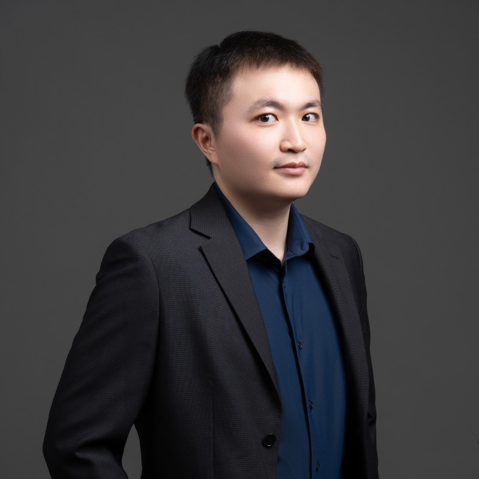

7→2天
大幅壓縮產品規劃到開發對齊週期
在戀結科技擔任產品助理時，面對客群尚在收斂的新創環境，我善用團隊既有的 Design System，在 Figma 快速搭建 Low-fi / Mid-fi Wireframe 與操作流程，取代冗長枯燥的文字規格，把前期需求規劃到工程進場對齊的時間從 7 天壓縮到 2 天。

你好，我是煒立（Willy）。熱愛從 0 到 1 的破局挑戰，專注探索 AI 技術如何結合產品設計，協助人們跨越行動阻力、提升決策與營運效率。
willy liao
面對模糊未知的市場，我選擇做個務實的樂觀主義者——帶著熱情發掘真問題，並用最低成本的敏捷實作，把抽象點子變成看得見的產品雛形。
跨域學術基底我畢業於國立臺灣師範大學企業管理學系與資訊工程學系雙主修，具備多益 860 分金色證書的英語能力。這讓我既能用商業漏斗與市場定位思考全局，也能用資料結構與系統邏輯與工程師無縫對話。
從 0 到 1 早期探索經驗大學期間，我擔任 3 個軟體創業專案（Caty、Lumi、Moodster）的負責人，主導早期市場需求調研、商業企劃提案與第一版 MVP 原型驗證。我深知早期專案資源有限，因此習慣透過街頭實地訪談、小型工作坊與 AI 工具快速收斂目標客群，為團隊探明真實需求邊界。
閉環溝通與極致當責（Extreme Ownership）我曾在創業專案中成功媒合 3 位企業執行長擔任團隊導師。每次請益與會議後，我會迅速收斂重點、落實執行並主動回報成果，以高能量與務實行動贏得決策者及合作夥伴的信任。
煒立 Willy正在尋找 AI 產品經理、軟體產品經理或早期產品企劃的機會

大學期間擔任負責人的軟體創業專案：Caty、Lumi、Moodster
多益金色證書的英語能力
在新創產品開發、數位行銷顧問與產學合作專案中，我不只做需求傳聲筒，更致力於建立「模組化工作機制」，降低跨部門溝通成本。
7→2天
在戀結科技擔任產品助理時，面對客群尚在收斂的新創環境，我善用團隊既有的 Design System，在 Figma 快速搭建 Low-fi / Mid-fi Wireframe 與操作流程，取代冗長枯燥的文字規格，把前期需求規劃到工程進場對齊的時間從 7 天壓縮到 2 天。
1個月
主導潛在客群訪談研究，在 1 個月內為平台鎖定 2 個核心使用群體及其痛點；同時規劃內部管理後台與數據儀表板，定義關鍵指標與漏斗分析，滿足高層日常營運與營收結算需求，顯著減少跨部門處理時間。
QA
向上釐清老闆的商業目標、時間與成本擔憂，把大目標拆解成可執行的 User Story 與 Goal；向下透過 Jira 看板定義清晰的預期結果，並親自執行全流程 QA 測試與提出優化建議，確保最終交付不走樣。
6+份
在數位行銷顧問實習中梳理網頁遊戲化流程、推動 2 項企業輔導專案落地，並促成海外市場策略合作；也主導超過 6 份跨產業產學合作提案，以及獲校內創業競賽第 2、3 名肯定的商業企劃書。
深呼吸三次
待辦：今天最想完成的一件事
我用 Google AI Studio 做過結合呼吸冥想引導的番茄鐘待辦工具。這裡用簡化版重現它的概念：先跟著圓圈呼吸三次，再開始 25 分鐘專注，可以直接試。
我始終對新技術保持好奇。在持續探索 AI 能力邊界的過程中，我把 AI 與 No-Code 工具內化成日常的生產力武器。
熟悉用 Google AI Studio 與 Vibe Coding 快速打造產品雛形，例如結合呼吸冥想引導的番茄鐘待辦工具、AI 穿搭辨識與單品推薦雛形；也建置過每日科技商業新聞的 AI 自動化情報流（Apps Script）。
持有 Bubble Developer Certification 官方認證，能獨立完成前端畫面與資料庫邏輯建置；串接過 OpenAI、Gemini、Google Map API，不必動用工程師就能做出可互動的 MVP 來驗證市場假設。
把 Whisper 與 NotebookLM 導入用戶研究流程，曾將 20 多位受訪者的質化訪談快速轉成結構化知識庫，用來聚焦市場定位。
需求探索與用戶訪談、商業企劃書（BP）撰寫、Wireframe 與 UI/UX 流程繪製（Figma）、敏捷專案管理與測試追蹤（Jira）、後台系統與數據指標規劃。
整個網站是一個 HTML 檔，不用 JavaScript 框架，也沒有建置步驟。下面是我做的幾個選擇，以及它們各自的取捨。
| 模組 | 採用 | 常見替代方案 | 取捨 |
|---|---|---|---|
| 頁面與樣式 | 單一 HTML 檔，樣式內嵌 | React 或 Vue 單頁應用 | 沒有建置與部署流程要維護；功能變多後，單一檔案會變長。 |
| 預約表單 | 原生表單加 mailto: | 自建後端或表單服務 | 不需要伺服器與帳號；但網頁上無法確認信件是否寄出，也不會自動存檔。 |
| 深淺主題 | CSS 自訂屬性加 data-theme 屬性 | 每個元件各寫兩份樣式 | 換一組變數就換整頁配色；新增顏色時兩套配色都要記得補。 |
| 呼吸動畫 | CSS transition 搭配 setTimeout 排程 | 動畫函式庫 | 少載入一個依賴；要改節奏就得改程式裡的階段陣列。 |
字型來自 Fontshare 與 Google Fonts，背景音樂與兩張校園照片（來自維基共享資源）也是外部連結；除此之外沒有依賴外部程式庫。
游走於商業策略與技術實作之間的產品人。我畢業於國立臺灣師範大學企業管理學系與資訊工程學系雙主修，專注探索 AI 技術如何結合產品設計，協助人們跨越行動阻力、提升決策與營運效率。
AI 產品經理（AI PM）、軟體產品經理，或早期產品企劃相關的機會。
在戀結科技擔任產品助理時，我用 Figma 的 Low-fi / Mid-fi Wireframe 取代文字規格，把需求規劃到工程進場對齊的時間從 7 天壓縮到 2 天，並在 1 個月內為平台鎖定 2 個核心使用群體。大學期間，我是 Caty、Lumi、Moodster 3 個軟體創業專案的負責人，也主導超過 6 份跨產業產學合作提案。
Google AI Studio 與 Vibe Coding 做產品雛形、Apps Script 做 AI 自動化情報流、Bubble（持有 Bubble Developer Certification 官方認證）做可互動的 MVP，串接過 OpenAI、Gemini 與 Google Map API；用研上用 Whisper 與 NotebookLM，產品管理上用 Figma 與 Jira。
用下方的預約面試表單寫好邀約信，或直接寄信到 aboutjob10062@gmail.com，也可以透過 LinkedIn 傳訊息給我。
填好職缺和希望的時間，按下「準備邀約信」，表單會幫你寫好一封給我的面試邀約，再用你的 Gmail 或郵件 App 寄出。
我收到後會盡快回信確認時間。這個表單不會儲存任何資料。
我正在尋找 AI 產品經理（AI PM）、軟體產品經理或早期產品企劃的機會。如果你需要一位聽得懂商業痛點、能聊技術邏輯、還能自己動手做出第一版 Prototype 的務實夥伴，歡迎寫信或透過 LinkedIn 找我聊聊。